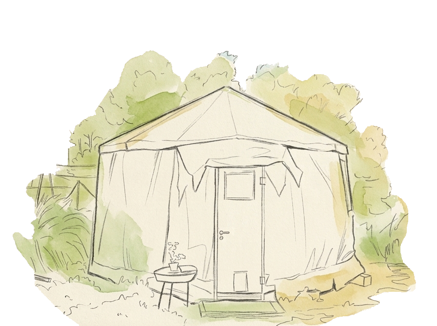
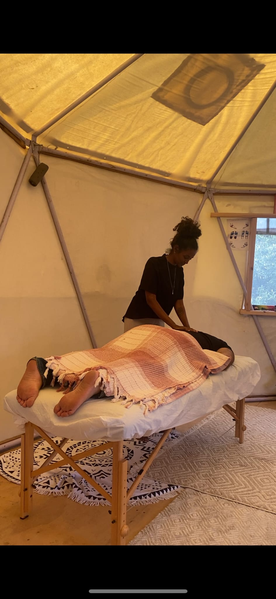
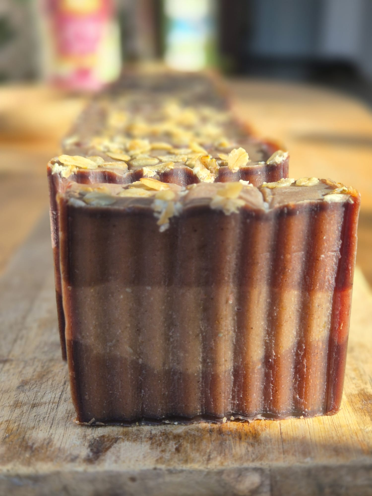
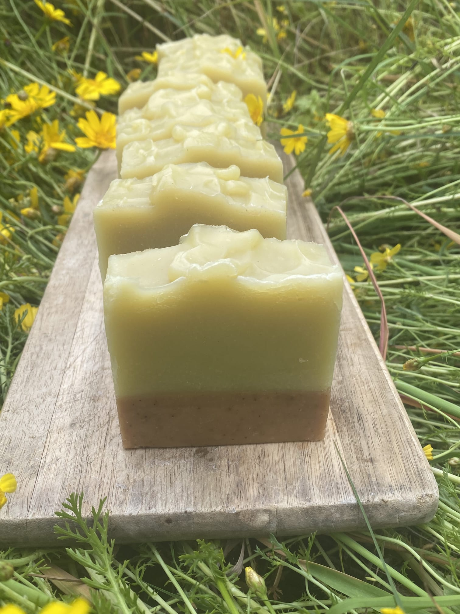
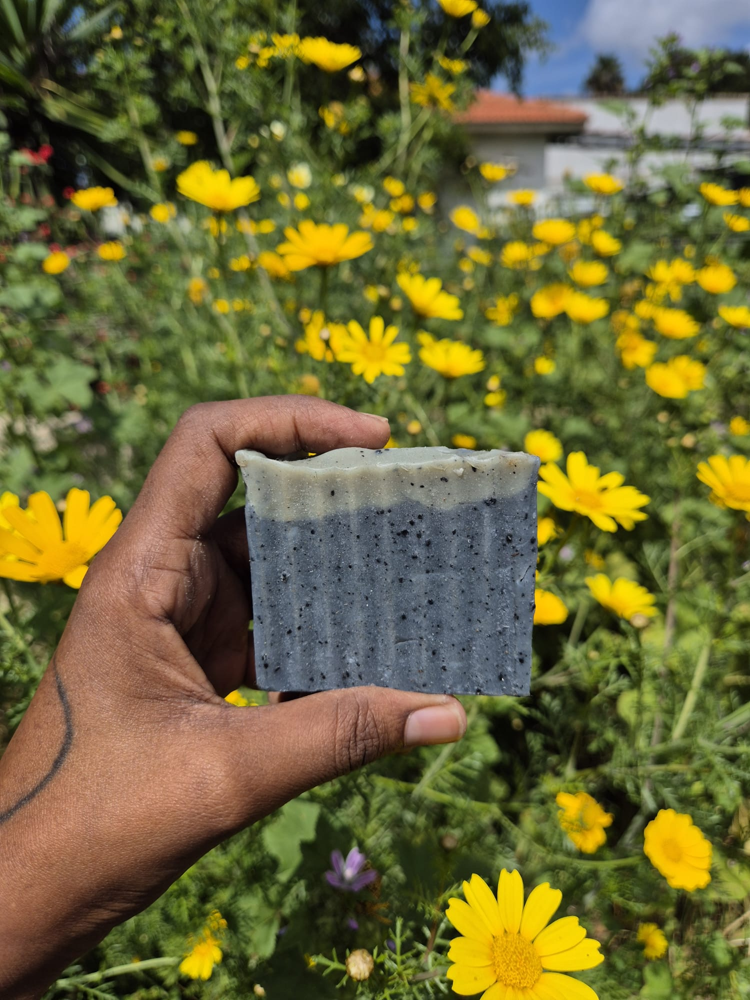
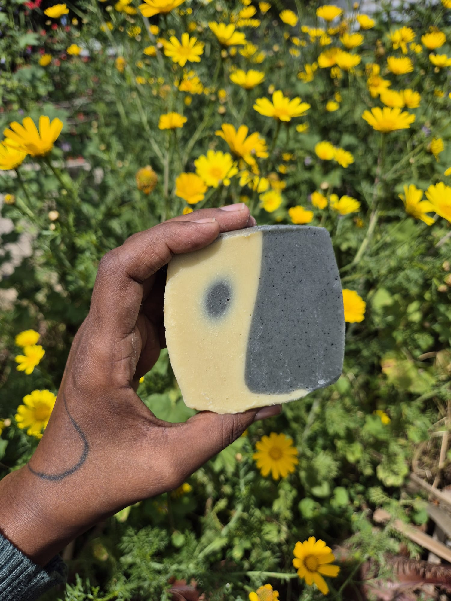
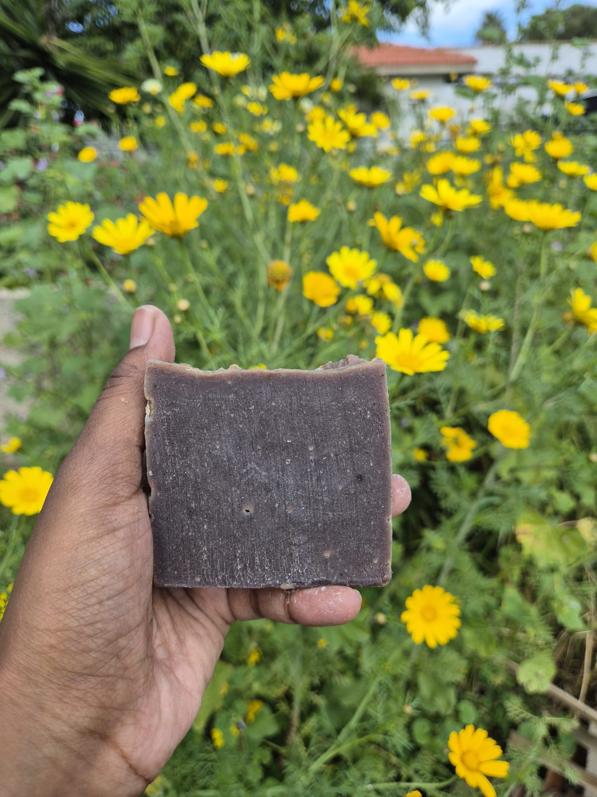
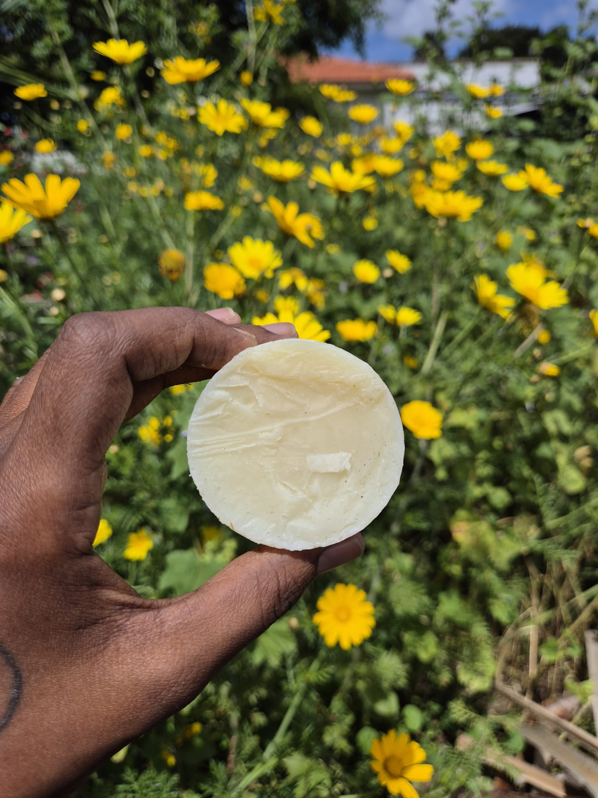
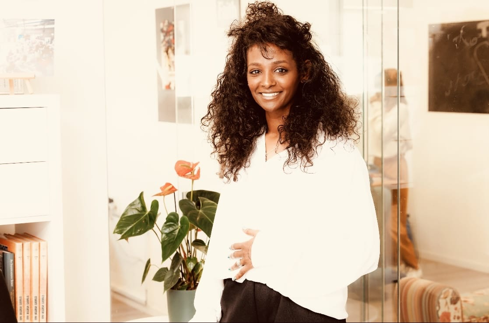

רפלקסולוגיה
רפלקסולוגיה היא שיטת טיפול הוליסטית המתבצעת דרך כפות הרגליים, כאשר כל אזור בכף הרגל משקף איברים ומערכות שונות בגוף. באמצעות מגע ולחיצות מדויקות ניתן לעודד זרימה, איזון, הרפיה ושחרור מתחים בגוף ובנפש.
סלם — רפלקסולוגיה, ריפוי רייקי וסבון טבעי שנרקח לאט. ריפוי הוליסטי שנבנה דרך הקשבה, פתיחות ורצון אמיתי להרגיש טוב יותר.
שתי דרכים עדינות לאותו המקום — להחזיר את הגוף והנפש אל האיזון הטבעי שלהם.
הטיפולים מיועדים לנשים

טיפול רייקירפלקסולוגיה היא שיטת טיפול הוליסטית המתבצעת דרך כפות הרגליים, כאשר כל אזור בכף הרגל משקף איברים ומערכות שונות בגוף. באמצעות מגע ולחיצות מדויקות ניתן לעודד זרימה, איזון, הרפיה ושחרור מתחים בגוף ובנפש.
רייקי היא שיטת טיפול אנרגטית עדינה שמטרתה ליצור איזון והרפיה בגוף ובנפש. הטיפול נעשה באמצעות מגע עדין או ללא מגע, מתוך כוונה להעביר אנרגיית ריפוי המסייעת לשחרור מתחים, רוגע וחיזוק תחושת האיזון הפנימי.
סדרת הסבונים הטבעיים שלנו מבוססת על טהרת שמני המרפא, חמאות צמחיות ותמציות בוטניות איכותיות. כל בלוק סבון נחתך ונארז בעבודת יד, מתוך כוונה להעניק לעור שלך ניקוי עדין, לחות עשירה והגנה טבעית.

עשיר ומפנק — קקאו מזין עם פתיתי שיבולת שועל מעדנים ושמן אילנג־אילנג המרגיע.

חימר אדום מנקה בעדינות, קליפות רימון מלטפות וניחוח יסמין נשי ועוטף.

פחם פעיל שמנקה לעומק, חימר ירוק מאזן וניחוח לבנדר שמרגיע את החושים.

שילוב מנקה ומאזן לעור — פחם פעיל וחימר לבן עם שמן עץ התה המטהר.

פשוט וטהור — קקאו מזין שמלטף את העור ומשאיר אותו רך וערב לריח.

הקלאסי של הבית — עדין, נקי וטבעי, מתאים לכל סוגי העור ולשימוש יומיומי.
רוצות סבון בהתאמה אישית, או כמות לאירוע? דברו עם סלם →
בחירת החודש של סלם — סבון נשי ועוטף. חימר אדום שמנקה בעדינות, קליפות רימון עשירות בנוגדי חמצון, וניחוח יסמין שמלווה אותך הרבה אחרי המקלחת.
אי אפשר למהר סבון טוב. כמו טבעות בעץ, הוא נבנה שכבה אחר שכבה — וזה בדיוק מה שמרגישים בעור.
צמחי לחלוטין · ללא מרכיבים מן החי
סלםנעים מאוד, אני סלם. מטפלת הוליסטית ברפלקסולוגיה ורייקי, בעלת תואר ראשון במדעי הרוח ורוקחת סבונים טבעיים.
הגישה שלי מבוססת על החיבור השלם בין הגוף לנפש. אני מאמינה שהגוף שלנו מדבר איתנו, שכאב פיזי הוא לפעמים שיקוף של כאב רגשי או פנימי שפשוט זקוק למקום.
כל פנייה מקבלת יחס אישי. ספרו לי מה מביא אתכן — ונמצא יחד את הדרך הנכונה עבורכן.